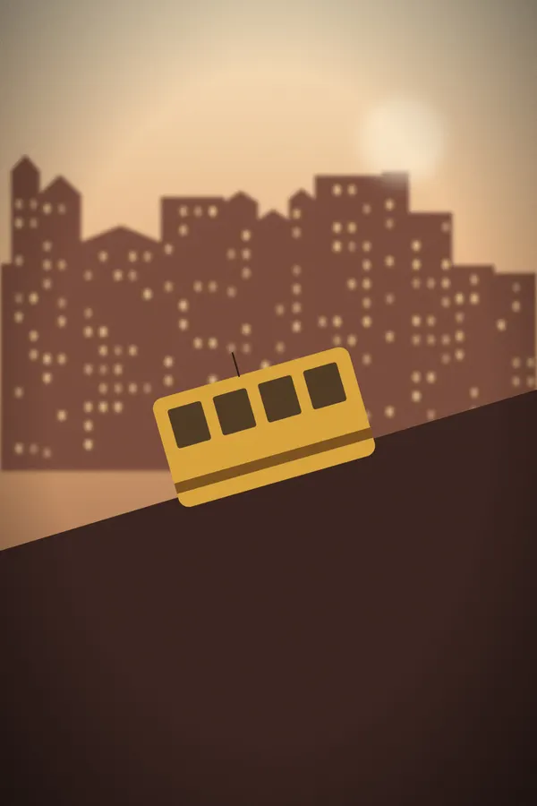
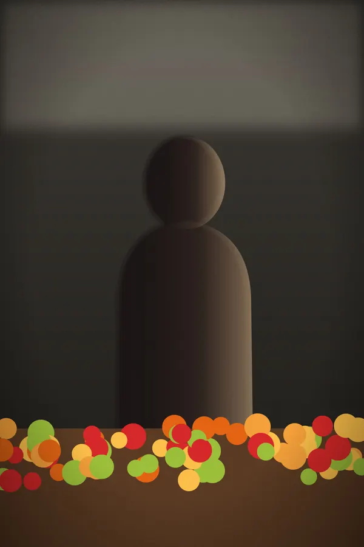
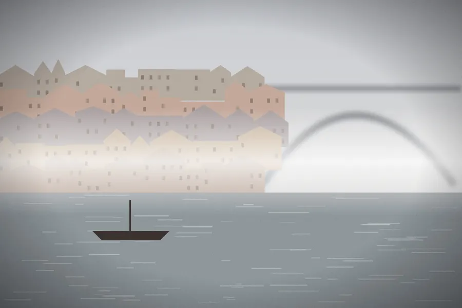
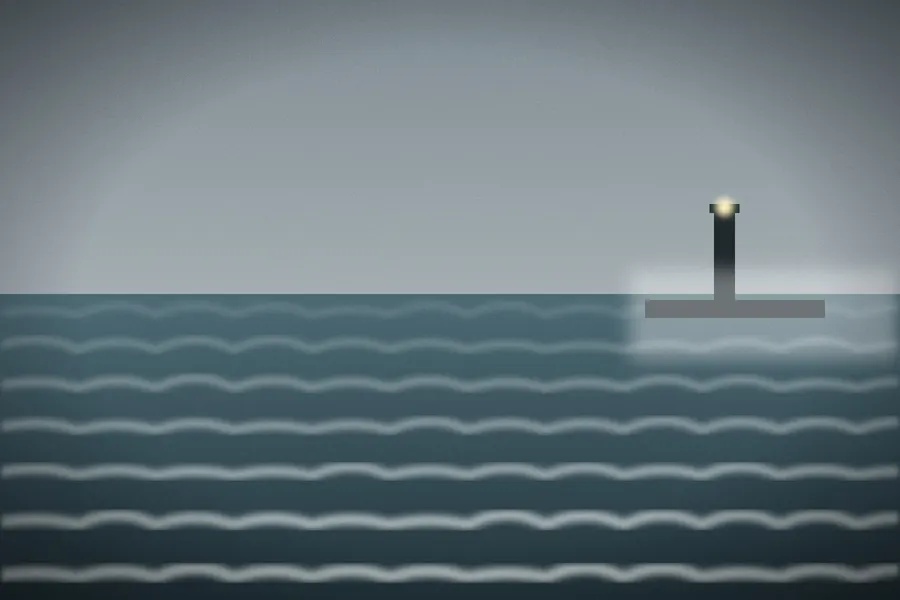

Voyages
Lisbonne et Porto
Deux jours, deux regards, un même océan. Sébastien a cherché la mer, Julien les gens : du premier tram de l’Alfama à la barre de Foz, là où le Douro rencontre l’Atlantique.

– voir en grand, photo 1 sur 10Nous étions partis avec une seule règle : ne pas photographier la même chose. Elle n’a pas tenu une journée.
Samedi 10 octobre, Lisbonne
Levés avant le premier tram, quand l’Alfama sent encore le café et le linge mouillé. Julien a attendu le 28 dans la montée : il passe toutes les douze minutes, et il en a fallu quatre pour que la lumière tombe au bon endroit. Le tram est monté à vide ; la ville dormait encore.
Une rue plus haut, toute une façade séchait au même fil. Julien n’a eu qu’à lever les yeux.
 – voir en grand, photo 2 sur 10
– voir en grand, photo 2 sur 10
Sébastien, lui, était descendu vers le Tage. Au Cais do Sodré, la marée basse découvre une rangée de pieux que personne ne regarde. Il y est resté une heure, le temps qu’un pêcheur entre dans le cadre et en ressorte.
 – voir en grand, photo 3 sur 10
– voir en grand, photo 3 sur 10
Le soir, nous nous sommes encore séparés : Julien sur le miradouro da Graça, Sébastien au bord de l’eau, à Belém. Treize minutes d’écart, sept kilomètres, et le même soleil. En comparant nos cartes mémoire, nous avons compris que la règle venait de céder, et que c’était tant mieux.
Même soir, deux regards
Lisbonne, samedi 10 octobre 2026, entre 18 h 52 et 19 h 05
 – voir en grand, photo 4 sur 10
– voir en grand, photo 4 sur 10 – voir en grand, photo 5 sur 10
– voir en grand, photo 5 sur 10En remontant par la rua dos Remédios, Julien s’est arrêté devant Inês. Elle vend des fleurs depuis trente ans au même coin de rue. Il lui a tendu la carte « Bonjour », qui dit en portugais ce que nous faisons de nos photos ; elle l’a lue, a souri, et a répondu :
«Fotografe à vontade. As flores não fogem, e eu também não.»
« Photographiez tant que vous voulez. Les fleurs ne s’en vont pas, et moi non plus. »
 – voir en grand, photo 6 sur 10
– voir en grand, photo 6 sur 10
Julien raconte cette rencontre, et ce qu’elle nous a appris sur la façon de demander, dans Inês, ou comment demander une photo.
Dimanche 11 octobre, Porto
À Porto, le Douro garde sa brume jusqu’à dix heures. Au marché do Bolhão, Tiago a laissé Sébastien photographier son étal à une condition : que les oranges soient dans le cadre. Pendant ce temps, Julien attendait sur les quais de la Ribeira que le pont sorte du blanc.

– voir en grand, photo 7 sur 10
– voir en grand, photo 8 sur 10À midi, Julien a compté les marches des escaliers des Guindais : deux cent soixante. Il les a montées deux fois, la seconde pour attendre quelqu’un qui les monterait à sa place.
 – voir en grand, photo 9 sur 10
– voir en grand, photo 9 sur 10
L’après-midi, Sébastien est parti vers l’embouchure. À Foz, là où le fleuve devient l’océan, la barre cogne contre la jetée et le phare s’allume avant la nuit. C’est la dernière photo du voyage, et la plus simple : une ligne d’eau, une lumière.

– voir en grand, photo 10 sur 10Sébastien a cherché la mer, Julien les gens. Inês nous a vendu des fleurs, Tiago nous a laissé photographier son étal : merci à eux.
Sébastien et Julien